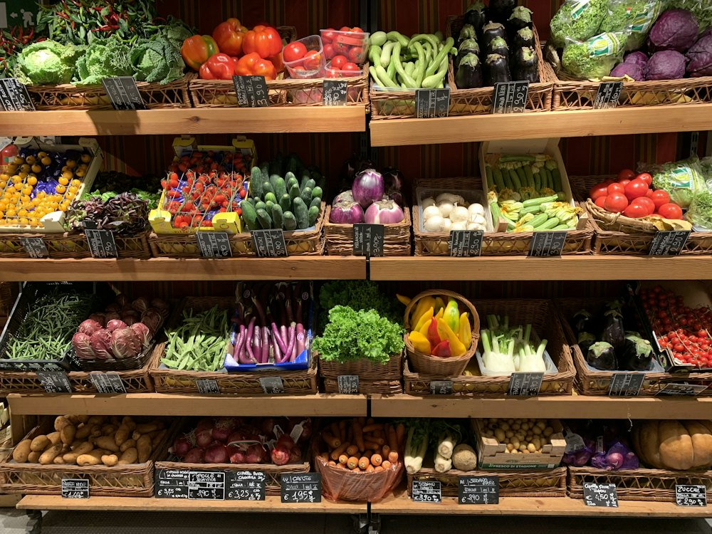

TOIMART · Барыс IV
Магазин · Супермаркет · Алматы
Рейтинг
★ ≈4.4
2 736 оценок
Год открытия
2014
первый TOIMART (дискаунтер напитков) открыт в Алматы в 2014 г.
Средний чек
≈6 000 ₸
оценка по типу заведения
Адрес и часы
📍 ТК Барыс IV, ул. Розыбакиева, 4, Алматы · Бостандыкский район
🕒 пн-вс 07:00-23:00
О заведении
Супермаркет TOIMART, работает с 7:00 до 23:00.
Популярные товары
Рядом в справочнике
The Банка Bar · Time Cafe "Relax · Tirol · TOIMART · Жандосова · Tok burger · Tok poki